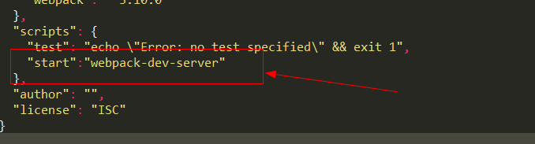

在项目的packag.json这个文件中，有一个script选项，在里面按照指定的格式添加需要手动执行的内置命令，在执行的时候，只需要输入npm run + 设置的键值对的key值就会自动执行需要的命令，例如：

执行的时候输入 npm run start 就会执行 “webpack-dev-server” 这个内置命令
上面是使用的是自定义的start 名称，也可以使用任意字符串作为命令，例如:
将start 换成dev 则执行的时候就输入 npm run dev 就会执行相同的内置命令；
执行的时候只需要执行： npm run + 自定义的命令名称，就会执行script 选项中配置的内置命令